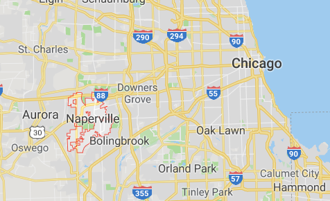
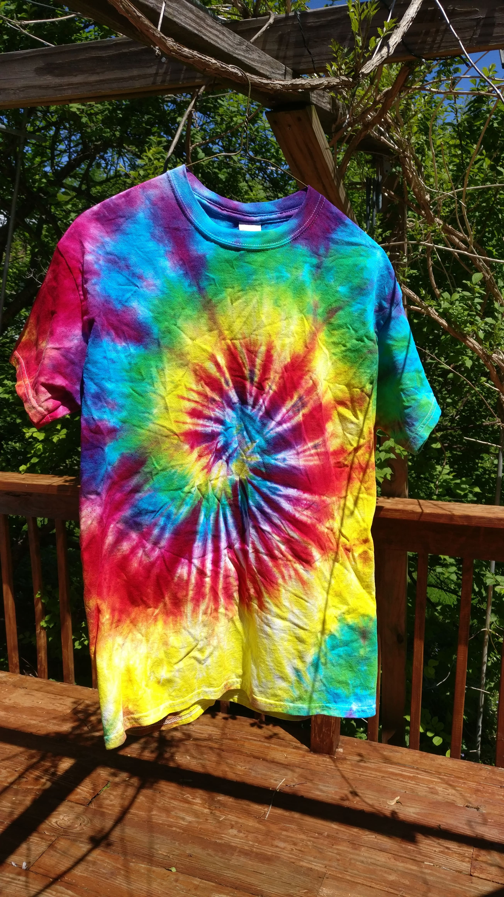
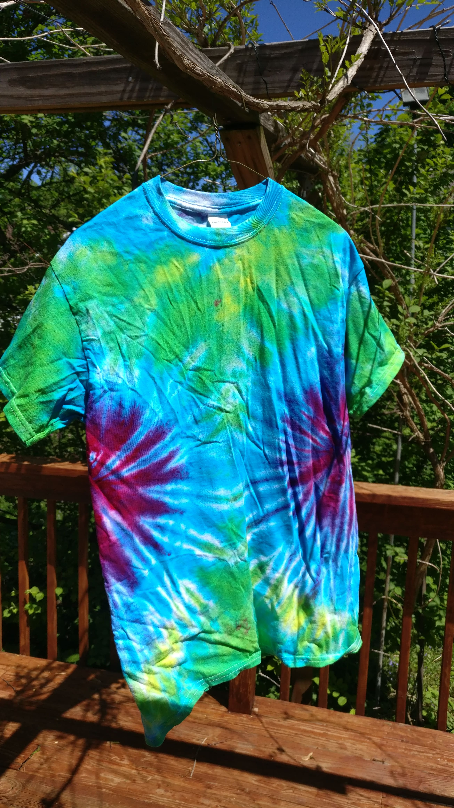
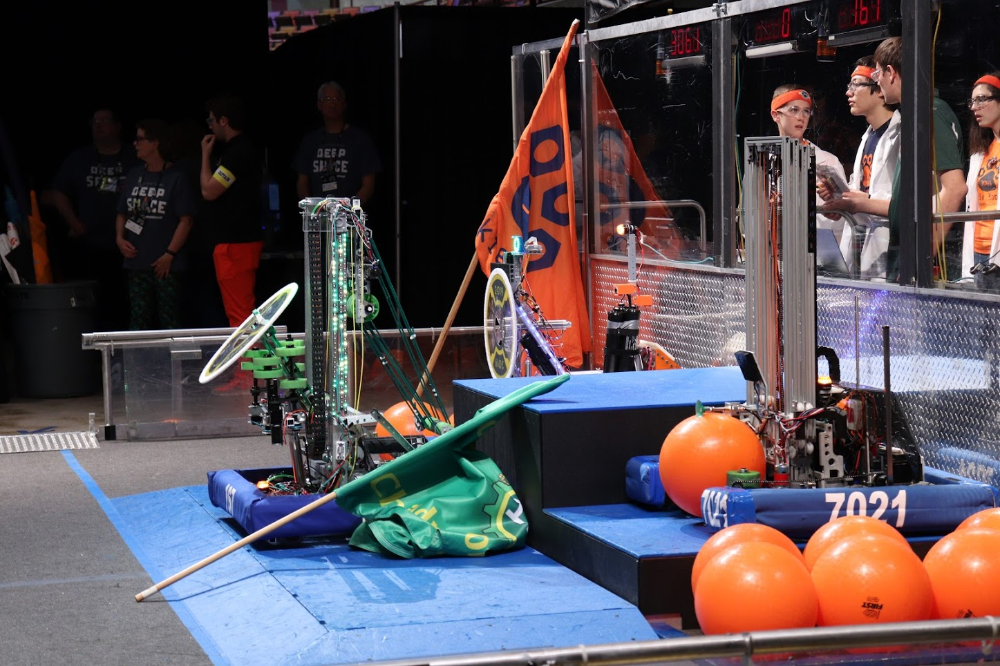
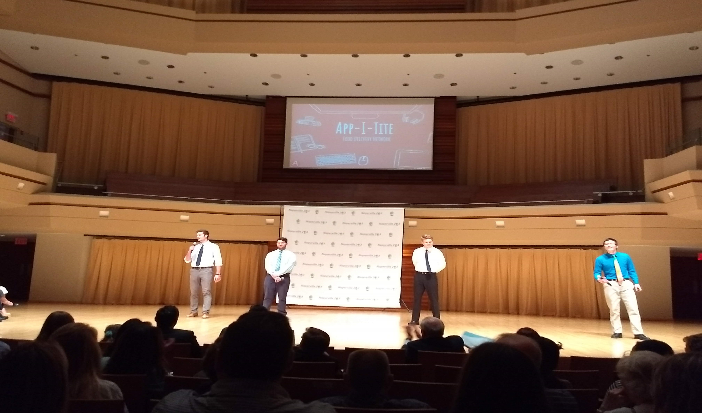
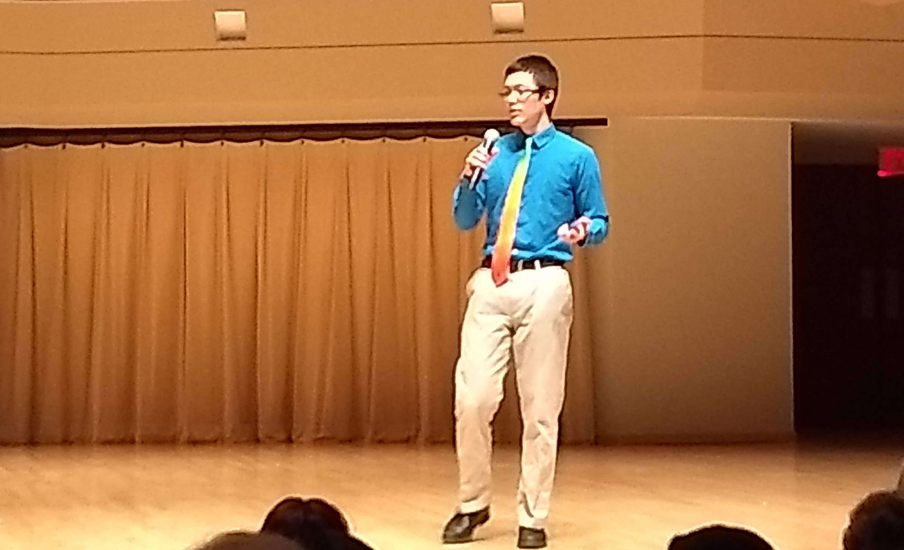
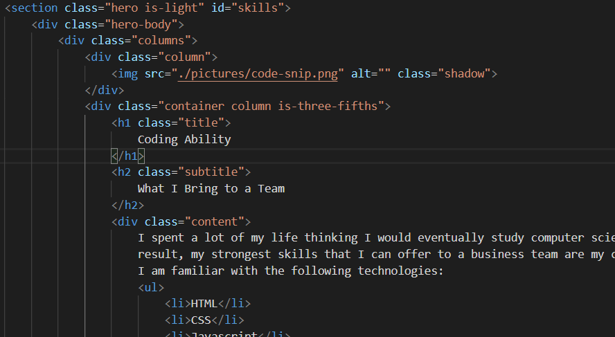

- Name: Gavin Tang
- Hometown: Naperville, IL (Chicago suburb)
- Age: 18 years
- High School: Naperville North High School
- Major: Supply Chain Management
Gavin Tang
ESP-103 Introduction

Background
About Me
Tie Dye
My Excuse for Having No Sense of Style
Every day since 8th grade, I have worn some article of tie dye clothing. That is currently PLACEHOLDER days. There isn’t any real reason or message behind why I’m doing this, I just like colors, and accidentally made them part of who I am. At this point, most of my wardrobe is something I have made myself. I have several shirts and sweatshirts, but I also have a dyed pair of pants, a set of tank tops to wear under work clothes, and a tie for special occasions.



Robotics Team
Main High School Extracurricular
In high school, I devoted most of my time to the robotics team. The team participated in
a competition called the FIRST Robotics Competition (FRC). In this competition, a game
challenge is revealed, and then teams are given roughly 6 weeks to design, build, and
test a robot. Then, teams from around the world meet and use their robot to compete in a
series of 3 vs 3 matches. Our team consisted of roughly 100 members, of which about half
were dedicated to designing, fabricating, assembling, and programming the robot itself.
The team also had a dedicated business subteam for negotiating sponsorships, and a media
team for organizing outreach. Over my 4 years, I served several roles on the team.
I developed data collection and analytics tools to help predict the game
strategy of opponents, and eventually became the head strategist and captain of the
team. In addition to competition, the team does community outreach, to inspire children
to pursue a STEM education, and be excited about the future of technology.
Business INCubator
High School Class
My high school offered a class that promised to be an experience like no other. Instead of standard quizzes, tests, and schoolwork, we would form into teams, come up with an idea for a startup, and then work on gaining the skills needed to expand it. The year culminated in the top teams giving a pitch in front of investors and the local community, looking to gain support for the idea. My team’s idea was, in hindsight, somewhat unoriginal. We wanted to create a competitor to the food delivery giants, GrubHub and UberEats. To set ourselves apart, we planned to reduce our costs by not actually hiring any drivers, but instead creating a marketplace of individuals to sell their delivery services. The idea was that if somebody was planning on eating at a restaurant, they could also order something on their way out and deliver it to the customer. By using individuals who were already at a location, we could save some time on delivery. Anything that is trying to “be the next Uber” or sells a “marketplace of individuals” sets of red flags that the startup might be nothing more than a lazy, get rich quick scheme, and our idea checked all the boxes.
Fortunately, good experiences can come out of bad ideas; our team was the first to build our minimal viable product, or prototype, by convincing some of the high school seniors with cars to bring back extra food from restaurants for the underclassmen who had some spare change. We were also able to partner with students from the software engineering class to demonstrate a payment system where drivers could be efficiently compensated. At the end of the year, while we were selected for the final pitch, we were not able to secure any funding, and the team split apart to go to separate colleges. Ultimately, the experience is what pushed me to seek out a business education, instead of a STEM field.



Coding Ability
What I Bring to a Team
I spent a lot of my life thinking I would eventually study computer science. As a
result, my strongest skills that I can offer to a business team are my coding abilities.
I am familiar with the following technologies:
- HTML
- CSS
- Javascript
- React
- single-spa micro frontend
- Java